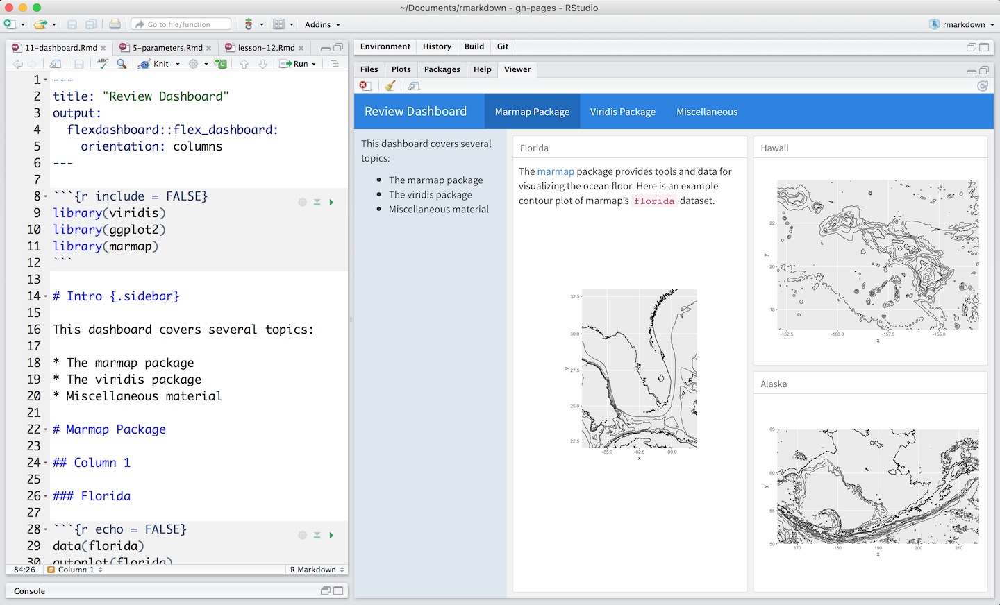

OpenLayers 4 R

Seamlessly brige R and OpenLayers
StefanKüthe@FOSSGIS 2018
htmlwidgets for R
“Bring the best of JavaScript data visualization to R“
Features
“Use JavaScript visualization libraries at the R console, just like plots“
“Embed widgets in R Markdown documents and Shiny web applications“
“Develop new widgets using a framework that seamlessly bridges R and JavaScript“
Deploy new widgets
Project structure
R/
| ol.R
inst/
|-- htmlwidgets/
| |-- ol.js
| |-- ol.yaml
| |-- lib/
| | |-- openlayers-4.6.4/
| | | |-- ol.min.js
| | | |-- ol.css
Dependencies
# ol.yaml
dependencies:
- name: ol
version: 4.6.4
src: "htmlwidgets/lib/openlayers-4.6.4"
script: ol.js
stylesheet: ol.css
R binding
(R function that invokes the widget)
# ol.R
#' @import htmlwidgets
#' @export
ol <- function(width = "100%", height = NULL, elementId = NULL, options = ol_options()) {
# forward options using x
x <- list(calls = list(), options = options)
# create widget
htmlwidgets::createWidget(
'ol',
structure(x),
width = width,
height = height,
package = 'openlayers',
elementId = elementId
)
}
JavaScript binding
// ol(-bindings).js
HTMLWidgets.widget({
name: 'ol',
type: 'output',
factory: function(el, width, height) {
// ...
return {
renderValue: function(x) {
// create map object
map = new ol.Map({
target: el.id
)};
}
};
}
});
Call widget from R
> library(openlayers)
> map_widget <- ol()
RMarkdown
Output formats

Example 1

Example 2
Shiny
Gallery: https://shiny.rstudio.com/gallery/
Controller
controller <- function(input, output) {
output$distPlot <- renderPlot({
hist(
x = rnorm(input$obs),
col = 'darkgray',
border = 'white'
)
})
}
View
view <- fluidPage(
sidebarLayout(
sidebarPanel(
sliderInput(
inputId = "obs", label = "Number of observations:",
min = 10, max = 500, value = 100
)
),
mainPanel(plotOutput("distPlot"))
)
)
# Run the application
shinyApp(view, controller)
Magrittr

Usage
The operators pipe their left-hand side values forward into expressions that appear on the right-hand side.
f(x) can be repaced with
x %>% f(),
where %>% is the (main) pipe-operator.
OpenLayers 4 R
It´s easy to install
> require("devtools")
> install_github("crazycapivara/openlayers")
And fun to use
> require("geojsonio")
> ol() %>%
add_stamen_tiles() %>%
add_features(us_cities) %>%
add_drag_and_drop()
Features
- base tiles: osm, stamen, ...
- WMS
- vector tiles: MVT, geojson, topojson
- simple features: polygons, points, lines
- markers
- popups
- styles
- controls: layer switcher, overview map, ...
- interactions: select, drag and drop, click, ...
- Shiny integration (get feature infos)
Getting Started
Create a map widget
map <- ol()Add some tiles
map %<>% add_stamen_tiles()Add some features
map %<>% add_features(us_cities, popup = us_cities$name)Add some controls
map %<>% add_overview_map()Show map
mapOL 4 R in detail
Map options
map_options <- ol_options(
max_zoom = 20,
zoom_control = FALSE)
map <- ol(options = map_options)
Tiles
ol() %>%
add_stamen_tiles("watercolor") %>%
add_stamen_tiles(
layer = "terrain-labels",
options = layer_options(max_resolution = 13000)) %>%
set_view(9.5, 51.31667, zoom = 4) %>%
add_overview_map()
Vector tiles
# mapbox
key <- "your_access_token"
mapbox <- paste0(
"https://{a-d}.tiles.mapbox.com/v4/",
"mapbox.mapbox-streets-v7/",
"{z}/{x}/{y}.vector.pbf",
"?access_token=", key)
ol() %>%
add_vector_tiles(mapbox, "Add attribution here") %>%
set_view(zoom = 14)
Styles
stroke <- stroke_style(color = "green", width = 2)
fill <- fill_style(color = "red")
circle <- circle_style(
stroke = stroke, fill = fill, radius = 10)
marker <- icon_style(icon_color = "blue")
text <- text_style(
property = "Name", scale = 2, color = "black")
# combine styles (e. g. when drawing polygons)
style <- stroke + fill
Simple features 1 (Points)
# Points
require("geojsonio")
cities <- us_cities[1:10, ]
# Add as markers
ol() %>%
add_stamen_tiles() %>%
add_features(
cities, style = icon_style(), popup = cities$name)
# Add as circles
style <- circle_style(radius = sqrt(cities$pop)/10)
+ text_style(property = "pop")
ol() %>%
add_stamen_tiles() %>%
add_features(cities, style = style)
Simple features 2 (Polygons)
# Polygons
require("sf")
nc <- st_read(system.file("gpkg/nc.gpkg", package = "sf"))
class(nc) #> "sf" "data.frame"
ol() %>%
add_stamen_tiles("watercolor") %>%
add_features(nc, style = stroke_style(color = "blue"))
# Add polyons from url
geojson_url <- "https://openlayers.org/en/v4.6.4/examples/data/geojson/countries.geojson"
style <- fill_style(color = substr(rainbow(178), 1, 7))
ol() %>%
add_osm_tiles() %>%
add_features(filename = geojson_url, style = style)
Controls
# Layer switcher
ol() %>%
add_stamen_tiles(options = list(
name = "stamen", type = "base")) %>%
add_osm_tiles(options = list(
name = "osm", type = "base")) %>%
add_layer_switcher()
# Misc
ol() %>%
add_overview_map(collapsed = TRUE) %>%
add_scale_line(units = "metric") %>%
add_full_screen()
Interactions
# Select
ol() %>%
add_features(us_cities[1:10,], style = circle_style(
radius = 15, stroke = NULL)) %>%
add_select(display_properties = TRUE)
# Drag and drop
ol() %>%
add_stamen_tiles() %>%
add_drag_and_drop()
The End
Hey ho
Stefan Küthe
stefan.kuethe@manserv.de